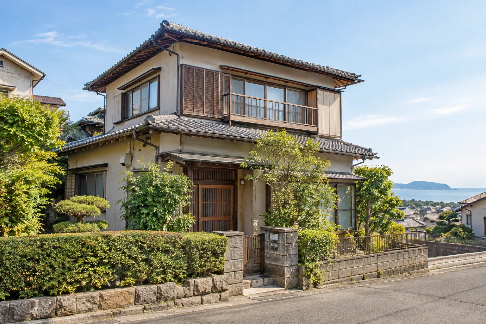
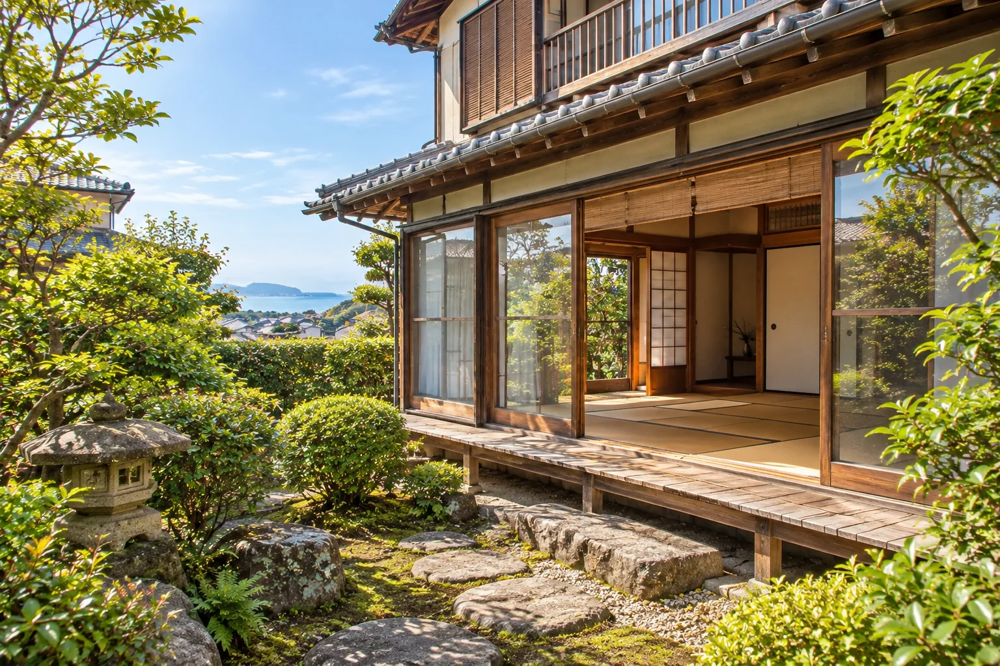
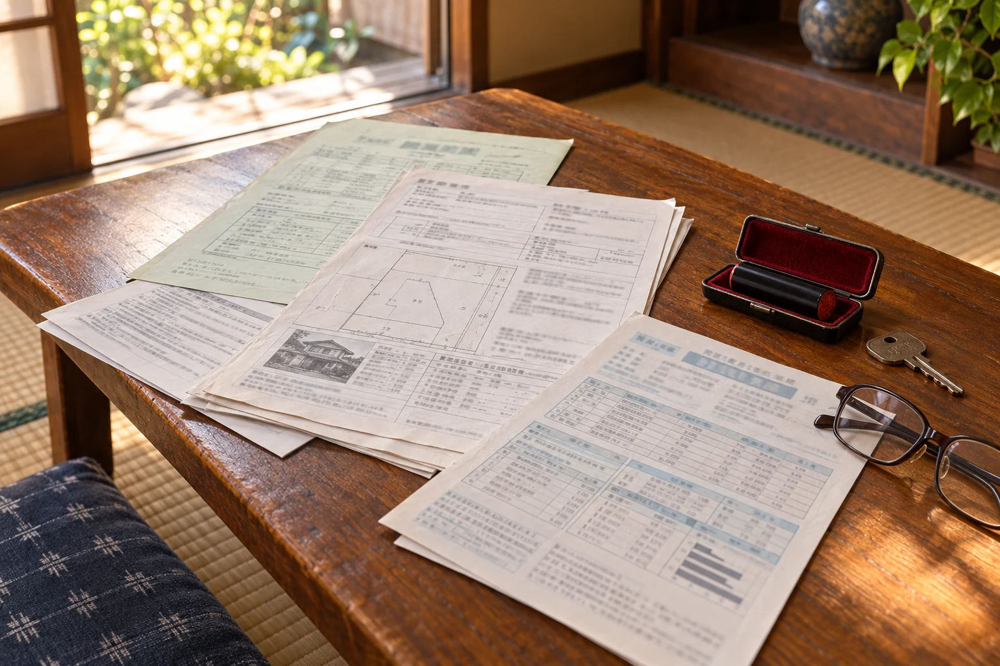

湘南での取引
藤沢・湘南エリアの売買実績（2014年〜2026年9月の社内集計）。
湘南での取引 1,200件／宅建士 5名／口コミ評価 4.7（86件）
名義がまだ父のままなんです…
相続登記は提携の司法書士が対応します。売るかどうかは、そのあとで大丈夫です。
近所には知られたくないです。
広告を出さない「非公開売却」も選べます。

※写真はイメージです
名義変更から片付けまで、何をどの順番でやるかを紙にまとめてもらえて、兄弟で話し合いやすくなりました。
藤沢市・60代（個人の感想です）
近所に知られずに売りたいと伝えたら、広告を出さない方法を提案してもらえました。
茅ヶ崎市・50代（個人の感想です）
査定額の根拠を近くの成約事例で説明してくれたので、納得して価格を決められました。
鎌倉市・70代（個人の感想です）
お客様アンケートより（2025年）。
戸籍の取り寄せから、必要な手続きを整理します。
登記、境界、建物の状態、残っている家財を一緒に見ます。
仲介・非公開売却・買取の3つを、価格と期間でくらべます。
相続登記（義務化されています）を済ませてから、売り出します。
家財の片付け・解体の手配もご相談いただけます。
譲渡所得の申告や、使える特例の確認は税理士が行います。
藤沢・湘南エリアの売買実績（2014年〜2026年9月の社内集計）。
査定の根拠や契約の内容を、資格者がご説明します。
登録した購入希望者に個別にご紹介する非公開売却ができます。
期間内に成約しない場合、事前に決めた条件で当社が買い取ります（条件があります）。

「高い査定額を出して、あとから値下げをお願いする。そういうやり方はしません。」
代表 浜野 健一。大手の仲介会社で働いたのち、藤沢で独立して12年。相続した家は、思い出や家族の事情が絡みます。売るかどうかを決める前のご相談から、どうぞ。
※写真はイメージです
| 査定・相談 | 無料（訪問査定も無料） |
|---|---|
| 仲介手数料 | 成約時のみ。売買価格×3%＋6万円＋消費税（法定の上限） |
| 相続登記 | 提携の司法書士の報酬・登録免許税が別途かかります（事前にお見積り） |
| 買取保証 | 買取価格は事前に書面で合意します。対象物件・条件があります |

会社の大きさより、地域の購入希望者とのつながりと、価格の根拠が大切だと考えています。売れる時期や価格をお約束することはできませんが、根拠を示してご提案します。
当社は、周辺の成約事例をもとに「売れる見込みのある価格」をご提示し、根拠の資料をお渡しします。
できます。相続登記は2024年から義務になっています。提携の司法書士が手続きを行います。
売却の進め方の整理はお手伝いできますが、相続人どうしで争いがある場合は、弁護士へのご相談をおすすめします。
片付け業者や解体業者のご紹介ができます。費用は事前にお見積りします。